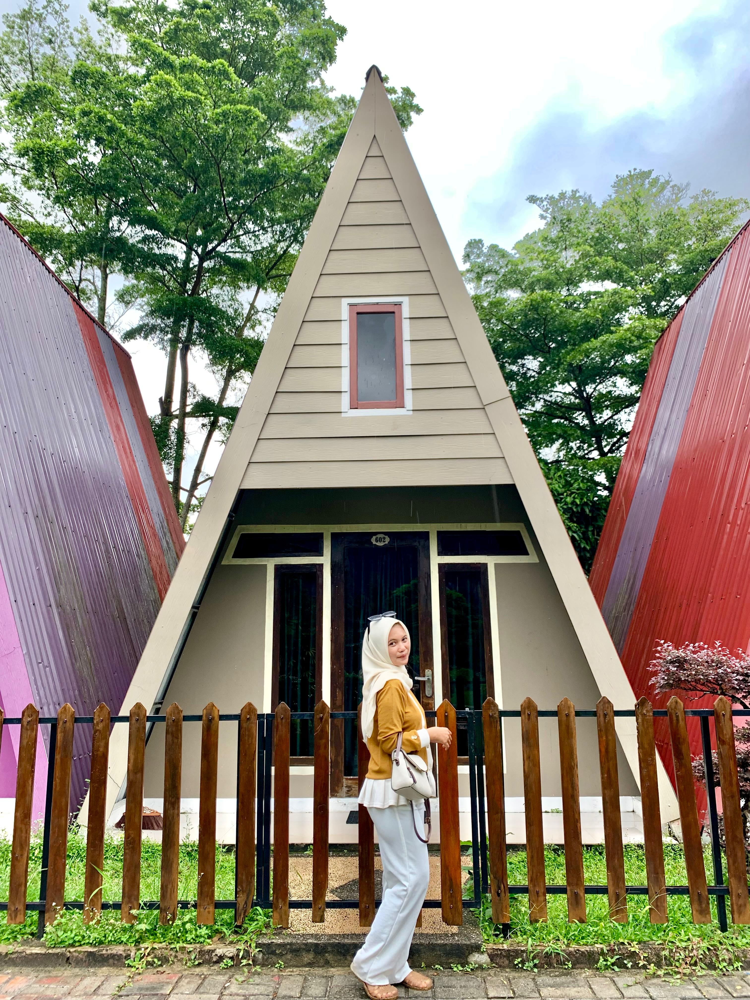
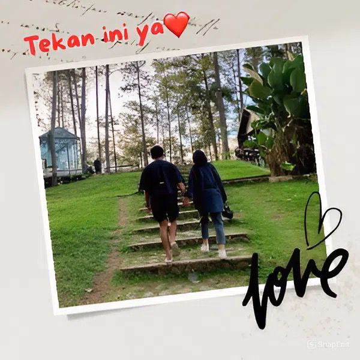

Untukmu
Selamat Ulang Tahun ya sayang!
Untuk orang paling spesial di hari yang spesial ini. Di setiap halaman web ini, kupersembahkan untuk mu.
Kenangan
Setiap Momen...
Bersamamu adalah anugerah. Terima kasih sudah membawa begitu banyak tawa dan warna dalam hidup aku. Aku bersyukur punya kamu Della Putri Andini.

Kebanggaan
Wanita Impian
Aku bangga punya kamu sayang, dari semua sesi perjalanan kita. Tetap jadi Della yang aku kenal ya.
Doa
Harapanku Untukmu
Semoga di usiamu yang baru, kamu selalu diberi kesehatan, kebahagiaan yang tak terhingga, dan semua impianmu tercapai. Aku akan selalu di sini mendukungmu.
I Love You
Lebih dari kata-kata yang bisa kuungkapkan. Dulu, sekarang, dan selamanya.
Selamat ulang tahun sekali lagi, cintaku 💖
